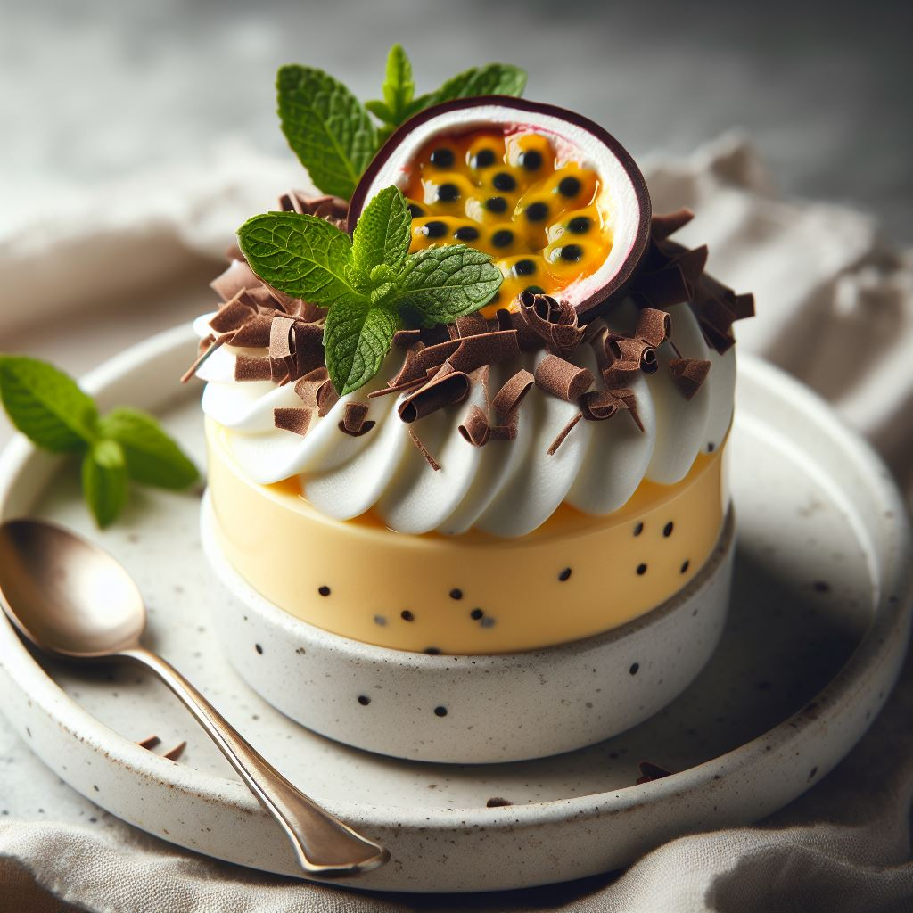

Sobremesa Mousse de Marcujá

Ingrediente:
- 1 lata de leite condensado
- 1 lata de creme de leite
- 1 xícara de suco de maracujá concentrado
- Polpa de maracujá e sementes para decorar
Modo de preparo:
- No liquidificador, bata o leite condensado, o creme de leite e o suco de maracujá até ficar homogêneo.
- Despeje em taças individuais e leve à geladeira por algumas horas.
- Antes de servir, decore com polpa de maracujá e sementes.